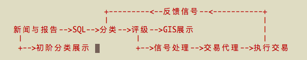
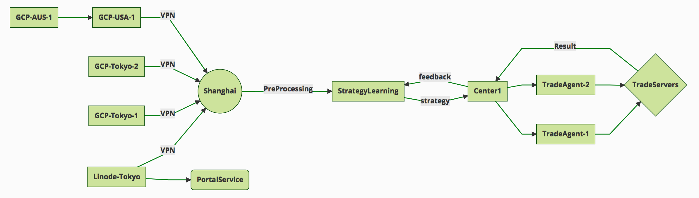

第六章 信号交易系统¶
先当作普通的控制系统处理，然后加入更多输入信号之后当作复杂系统处理，采用ABM建模。
系统输入信号：
技术分析、舆论分析、新闻分析（含突发新闻与数据新闻）、报告分析，
以及它们的历史数据、机器学习后backtesting的数据。
系统控制器：
为了保持盈利水平，可能需要扩大正反馈，减弱负反馈，即止盈大、止损小。
控制器设计在输入信号作为反馈的基础上，将历史订单的盈利水平作为主要参考，
即将整个控制器置于输入环节，从而形成完整的闭环系统。
软件架构：
为了保持高并发，哈希环分发任务，消息队列mq，使用工作流控制任务，数据库使用少字段多KV，新增功能加到KeyVaule列表中，无需增加数据库字段。
系统平台流程概述：
交易：
注册 -> 分配MT4虚拟机（容器）-> 交易开始 -> 周期结算
注册 -> 独立MT4客户端 -> 交易开始 -> 周期结算
新闻：
新闻提供GIS与新闻源两种查看方法
免注册 -> 新闻查看、搜索
注册 -> 新闻查看、搜索、推送
算法：
一：专家人工复制
二：指数指标机器学习交易
三：基本分析与舆情分析，并结合（二）进行交易
外汇信号系统即是面向外汇新手的平台，普遍具备最基本的（文字）新闻发布功能，再者即是合适买入或卖出的信息，如果合适的话，也可以提供交易拷贝（trade copier）让其他人自动跟随专家的交易方式进行交易。
当前整个系统的架构比较简单，总体可看作一个非线性回馈控制系统，输入信号包括新闻、新闻对外汇的评级（以下简称评级）、技术指标、历史订单、其他网络信号，输出则简化为订单处理（下单、平仓、修改）与事件（用于推送到客户与网站），其中订单的盈利情况会作为回馈信号。
画个图可能更清晰：
这是目前的服务器架构图：
目前与本章相关的项目：
主站点
https://forex.fusionworks.cn
新闻GIS系统
https://github.com/lofyer/forex-gis-news.git
MT4服务端
https://github.com/lofyer/mt4-server.git
MT4交易脚本
https://github.com/lofyer/mt4-scripts.git
TUI汇率展示
https://github.com/lofyer/forex-rate-board.git
OANDA API调用脚本
https://github.com/lofyer/oanda-scripts.git
交易模型
https://github.com/lofyer/quantum-trade-model.git
原始交易模型
https://github.com/lofyer/trade-model-01.git
在学习分类指标与评级指标的时候，我们需要做批量的backtesting。
6.1. 新闻、报告与大盘信息¶
6.1.1. 新闻收集¶
新闻收集使用了SimplePie，对各大主流媒体的RSS进行每小时一次的收集活动，并将其存储至MySQL/Oracle数据库。
6.1.2. 新闻分类与评级¶
新闻分类我们可以参考 Google的专利 ，即选择某类新闻的频率较高的词，然后再将其应用到新的新闻中。笔者觉得此时监督学习的效率更高。
StoryId Class word1 word2 gram1 gram2 ...
1 sports 0 0.2 0.01 0
2 tech 0.5 0.01 0 0.3
3 sports 0 0.1 0.3 0.01
分词、NLTK工具、分类
https://github.com/yassersouri/classify-text
https://github.com/kareemf/news-article-classification
scipy
scikit_learn
pybrain
jieba
tensor-flow
可直接使用python-geograpy进行新闻地点筛选，以及pycountry查询地点信息。
评级需要学习 ，即根据新闻发生时间、地点、事件，然后结合大盘状况进行评级。
6.1.3. 报告评级¶
报告不同于新闻，它的权威性与概括性更强，时效跨度或长或短。目前，对于计算机来说，报告的处理难以达到人工理解的水平，因为它需要结合尽可能多的信息去处理，而对于一般交易者来说，这需要相当高的技术要求。
报告评级的权重高于新闻评级。以笔者经验来看有以下报告会对汇率产生重大波动：
- 国际收支（贸易余额）
- 利率与货币供给政策
- 通胀与通缩
- 资产价格（债券、股票、房地产）
- 商品价格（CRB现货指数）
- 政府预算与财政政策
- 国家信用评级
- 政治与战争
- 自然因素
- 数据公布（消费者物价指数CPI、零售销售、生产者物价指数PPI、工业生产IP、采购经理人指数PMI、就业数据）
6.1.4. GIS展示¶
可参考网站内容
6.1.5. 大盘历史数据¶
获取历史数据的途径比较多，Python/R语言中有非常方便的库可供直接调用，比如pandas、quantmod等。但是，他们的数据源、数据周期、数据精度等不太满足我们的回测需求，所以在经过大量测试后，笔者推荐使用如下方式进行获取。
6.3. 相关性处理¶
机器学习部分将技术指标、新闻与大盘数据进行相关性学习，其处理过程可被随时查看与人工干预。
6.4. 交易策略¶
6.4.1. 策略1 - 批量¶
6.4.2. 策略2 - 止损批量¶
6.4.4. 策略4 - 技术指标与新闻自动交易¶
6.4.5. 策略5 - 基于历史数据机器学习的技术指标与新闻自动交易¶
6.5. 回馈信号的处理¶
6.6. 输出处理¶
客户交易端与新闻端
6.7. 客户模拟平台¶
OpenShift
6.8. 交易箴言¶
网络代理
FPGA交易机器人
网络代理
Dow Jones Theory¶
交易心理¶
In the contemporary exchange market exchange rates are defined through decisions of thousands of traders and investors. The psychology of human behavior is considered to be the clue of understanding what happens in financial markets. What are the motivations for trading? How our emotions affect our decicion making process? How to avoid the failure and become a successful trader? Have you ever wondered about these questions? Keep reading to find out the answers.
Avoiding Failure
In stock trading decisive influence on the behavior of the trader is made by common to all feelings such as fear, greed, hope, etc. Weak and self confident, greedy and slow; all these people are doomed to become the victims of the market.
The recognition of your own abilities, positive or negative qualities will help you as a trader to avoid failure. If we also add to this the ability of adequate evaluation of the psychological state and the behavior of the market, the success is guaranteed.
The Motivations
One of the driving forces, making you to take part in the work of speculative financial markets, is the possibility of earning “easy money” or, saying directly, greed. The result of greedy action is the motivation for making deals.
One can distinguish between two kinds of motivations:
- Rational motivation is expressed through cold prudence when taking decisions about making a deal.
- Irrational motivation is expressed through passion of the player; the others are the slaves of their emotions and are practically doomed to lose.
- If the trader does not have a working plan formed before making deals, it speaks about the fact that the person is likely to work under the influence of greed but not reason.
Understanding Hope
The following factor motivating the trader to make deals is the hope to get profit. If the hope prevails over the profit calculation, the trader undertakes the risk of overestimating his abilities when analyzing the situation. Hope must be placed in subordinate relations both with calculation and greed. It is the great hope that brings beginners to failure. The trader, living with hope, is doomed to failure. It is a hope that pushes traders towards making one of the most cruel mistakes- shift of the stop-loss orders level.
From outside, trading seems to be an utterly simple matter. But in reality for the majority of people it later on appears to be the most difficult of all the issues.
Accepting Losses
You will not be able to become a successful trader until you are ready both for victories and losses. Both of them are important and inseparable parts of the trading process. On the way of mastering the art of trade very often barriers are met. When the trader focuses on the problems (there can be numerous problems, for instance, lack of means, resources and knowledge), he feels anger, guilt, disappointment and dissatisfaction. But such an emotional state will not let him move forward. If the loss is unacceptable for the trader, he will not be able to close the losing position. When the trader is not ready to face losses, they usually become more.
Trading Psychology and Self-Discipline
In trading, there is a tiny minority of winners and overwhelming majority of losers and the latter wish to know the secrets of success of the winners. But is there a difference between them? Yes, there is; the one who makes money week by week, month by month and year by year, trades keeping self-discipline. To the question of the secrets of his stable market triumph, such a winner answers without hesitating, that he was able to reach such heights by learning how to control his emotions and change his decisions to match the market.
Note, self discipline, control of emotions and the ability to reconsider are all psychological moments which are not related to information services, consultation firms, new exchanges, technical or fundamental trade systems (with computer programs or without them).
Do not confuse confidence with extreme self-confidence
Interviews with traders confirm that extreme self-confidence plays an important role in making trading decisions. If the trader receives good profit, he becomes more prone to risk which is followed by negative consequences. This is a tendency of becoming extremely self-confident after success, which mostly happens with the less experienced market participants.
Extreme confidence easily transforms into a dangerous quality, as people who are too much confident in their beliefs will not pay attention to important information which is valuable for their trading decisions. Confidence and negative emotions are directly related to each other in strength. In general, confidence and fear are similar senses by nature; only the one is with a “plus” sign and the other with - “minus” sign. If the person feels more confident, there is a little room left for confusion, alarm and fear.
How does the sense of self confidence develop?
In a natural way, the person gets used to relying on himself in everything that he has to do without any hesitation. With such trust in himself he does not have to fear the market with its seemingly unpredictable and chaotic behavior. The matter here is not with him at all, as the market did not change but the inner world and psychological warehouse of the trader have.
How to become a successful trader?
There are two important terms in relation to a good trader.
- To set a principle of trading exclusively on the basis of self discipline.
- To learn how to remove the negative emotional energy of the last trade experience.
Due to the principle to self discipline, self trust is being formed, which is necessary for successful trading actions.
Almost in the majority of cases each trader starts his way on the primary level without understanding trading psychology and without the principle of self discipline. And it is likely to get psychological trauma (a psychological state which is capable of making people feel fear) of this or that severity. It is necessary to learn how to get rid of worries. When there is little fear as a consequence, you absorb new knowledge about the nature of the market.
Do not forget that each moment is an excellent indicator of your development level. But if you consider each failure (if it did not happen as you have expected or wanted) to be a mistake, you very often deprive yourself of understanding yourself. While people become shy of learning something new about them. Why? Because mistakes mean an emotional pain for them. Avoiding pain instinctively, the person unconsciously refuses to recognize himself, when it is necessary to manage better a similar situation in future.
The bottom line
To reach a success in trading, you need to take the whole responsibility of your decisions and actions on yourself.